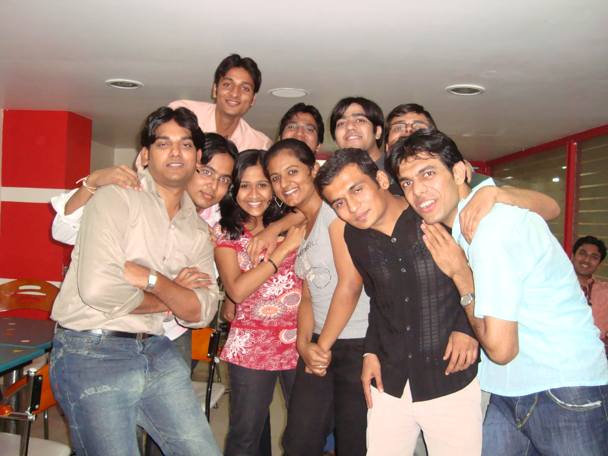

The Yearbook - Commemorating 2005-09!
Shikha Aggarwal's profile information
Name - Shikha AggarwalBirthday - 20 August
Email - helloshikha@gmail.com
Address - House no. 601, New Kamla Nehru Colony, Bathinda - 151001, Punjab
Phone - 0164-2222766(Home), +91-98666-81227
Hobbies - Reading, sleeping
WishList - Travel around the world
What would you want to be remembered as - :)
Testimonials written to Shikha Aggarwal
Shikha Aggarwal's Album

Default caption

Default caption
Testimonials
For Sanket Sharmadadddddu ...

I must confess - mujhe ise dekh kar hi hassi aa jaati hai.
 Whenever I see this person - I wonder what he might be thinking! When he is talking - I wonder what else is he thinking! When I see him walking alone (with his million dollar laptop bag
Whenever I see this person - I wonder what he might be thinking! When he is talking - I wonder what else is he thinking! When I see him walking alone (with his million dollar laptop bag  ) - I still wonder ab is ka khurapati dimag kya soch raha hoga..
) - I still wonder ab is ka khurapati dimag kya soch raha hoga..  Even when I read his mail... ... In nutshell, this person makes me think a lot!! I am at loss to figure out when he is talking seriously and when he is joking.
Even when I read his mail... ... In nutshell, this person makes me think a lot!! I am at loss to figure out when he is talking seriously and when he is joking.
I seriously start laughing whenever I see him .. and this is true so much so that - in one of our courses, from the moment he came in front of class to give a presentation, I started smiling and I laughed my heart out during the whole presentation. I think it was his style of speaking. Though the presentation was very serious.
He can make every dull moment - rangeen !!
Daddu ki alag hi 'ada' hai!! I am a huuuuge fan of his style of doing things.
Ab dont get the idea - that he's only a mischief maker. He has done a million and one things for the batch and helped many individuals. Kisi ka mobile kho gaya tha and someone narrated how daddu managed to get it back -- I thought it was a well-knit story by some one to mock daddu ki 'daddu'giri
Bindaas banda hai. And samajhdaar too. He can single-handedly handle huge responsibilities.
 He has excellent communication skills and can convince people 'of any thing'. Believe me!!
He has excellent communication skills and can convince people 'of any thing'. Believe me!!
When he gave his farewell speech and reminded us of things we are going to miss.. I thought of one more thing that he could have added -- "there will be no daddu around to do things for you people".
Good Luck and wish you loads of success in life!!
For Prashasti Gupta
I know this testimonial comes as a surprise to all.
Anyway, this is dedicated to the awesome time we spent together. I still remember those times - we used to follow the "exact" same schedule - slept at same times, went for P.T.(and 'bunked' it) on the same days, went to lab together, came back together, had *every* meal together, of course went for movies and other outings together.... phew! I remember one day she had gone to her local relatives and Prachi asked me shocked "Where is your other half?"
Cheers to those times!!
I don't exactly remember how and when it started, but we drifted (wide) apart over the years. Nevertheless, I think we both know that we both miss those days -- the first sem days -- the group of famous four.
I'll try to enumerate what all I remember from the stay with her. She is a very caring person. She is a person who can maintain her calm and patience in almost any situation, will not react immediately even if she's hurt or sad, will try to listen your side of story, and is quite understanding... But yes don't take her for being fragile, she can 'kick' you (literally) if needed be !!!
 It goes without mentioning that she is very sincere and dedicated to her work (I know - sab ko pata hai !!).
It goes without mentioning that she is very sincere and dedicated to her work (I know - sab ko pata hai !!).
Baaki ... she hates it when you say "aur kitna khayegi!!"
I used to scold her for wasting food (hope you don't do it now!!).
I always missed the those lovely times, the outings we went to, the night outs, the movies in labs, the girly-talks, .... and I always will miss them.
And yes .. the fattas we together used to crack!
Period.
All the best girl!
For Himank Sharma
He is by far the weirdest creature I have come across
He is known among the batch mates for his craze for numbers. He tries to remember the car-plate numbers!! He was once caught driving after being drunk in his hometown and locked up (yes!!)and don't know how he managed to get out of the shit without his parents knowing about this.
When with him, you can't help but talk according to what he wants. No matter if you are serious and he in funny mood, you have to deal with it.
Not that he wants this way, but this kid cannot judge others!!
Getting the picture of a spoilt college kid? are you? But he is very good at heart. He's a very cute friend of mine. We have had our share of ups and lows in our friendship, but whenever we talk ( mostly in bursts - each after a gap of some months ) ... we talk as if nothing happened! Yeah .. I share a weird kind of friendship with this weirdo
Yep! No one can/likes to irritate him. He can get on to 'anyone's' nerves! Believe me!
He is an epitome of I-dont-give-a-damn-to-studies attitude. It freaks me out how someone can be so non-serious about his studies/carees/exams!
He sure is one of his kind - weirdo.
I'll miss you..
For Sunil Soni
I have known this person since second year. Bindaas banda hai. Is ki mauj lene mein bahut mazza aata hai.
I'll miss those meals I had with you in Yuktahaar.... I used to nag him sooo much - for being lazy (he preferred to eat plain chapati to getting up and serving himself with curry! He used to wait(literally stop eating) for someone else to get up and fetch somethings for him ). I sometimes used to bug him when he came online!!
The outings with him mainly centered on the whole group ganging up on one of the bakra and teasing him/her.
We have had our share of talking some serious stuff too.
He is a perfectly balanced person - can keep you happy with his jokes and also listen you out if you are serious. His behavior can also consist of being kiddish sometimes. Plays badminton quite nicely.
Hope you overcome your laziness someday...
It was fun spending time with you buddy!
Look out for some more online bugging sessions from me
Good luck and keep in touch.
For Yogendra Umesh Itankar
Yogi ... he is a real 'masterpiece'.
I think I will take the responsibility to document the numerous accounts of this great personality - so that they are not lost in the pages of history.
1. He wanted to edit a picture in notepad.
2. Once he knocked someone's door for about 20 mins ... because he wanted to wake him up. Later someone told him that the door was locked.
3. He started creating ppt in notepad. But later someone saved his day by giving the idea of trying it in MS powerpoint.
4. He went to a shop for recharge coupon. Then later he asked shopkeeper - "Fresh hai na?"
.......... ab mujhe kuch aur bhi likhna hai.
Yeh hain hamare sweet yogi ji. This person is one heck of a person - as sweet and simple as anyone can get.
He is a bond in things he likes. He doesn't care about the things he doesn't want to know about. Has his own little, cute ways of doing things. I can never ever imagine yogi using any harsh word. He is very very innocent. Jokes ultimate crack karta hai.
Hats off to you!
Remain the same - we need good, humble, innocent people on earth - to define what 'all good and no bad' is.
All the best and may you conquer peaks in all the paths you take in life!
For Saurav Khurana
He gets irritated if someone tells him - yeh batch ka sab se sincere, hardworking ladka hai. i.e. he is "
 "
"
He says (irritated)- Arre yaar, sab yehi kehte hain.
What he means is - You *******, why are you stating the obvious.
We both pull each others' legs a lot ... taane maarna chalta rehta hai ..
But he's a good chap. He helps you whenever possible. But thoda moody hai ... and temper high hote time nahi lagta
Isi liye sab ko khurana ki mauj lene mein bada mazza aata hai !!
This Haryanavi Jaat has a knack for working extremely hard and be focused on anything that he wants to get! And he commands everyone's respect for the amount of work he can put in for something.
No, no, he is not completely a nerd. He talks about girls too .. doosro ki mauj bhi leta hai. No one is clear about his love life status though.
 When it comes to planning outings, yeh khoob uchal uchal kar plan karta hai..
When it comes to planning outings, yeh khoob uchal uchal kar plan karta hai..
Baaki (K)BC bahut maarta hai.
Is ke jokes are famous .. and he is known for his 'weird' comments.
Remain the same!! We need someone like you to remind us how 'khuarana' was like.
All the best and keep in touch!
For Shashank Agrawal
part 3
He is the exact opposite of me. To begin with, I like sweet thingys whereas he likes the chatpat and teekhi ones. The person can be as cool as a breeze in any given situation, while I can be a perfect drama queen in the same situation. He can explain any damn thing with an example and logic -when I am struggling to make sense out of what happened ... If he knows what he wants, he perfectly knows how to. I just ask him what I have to do to get this or that. He is a meticulous planner. He does most of the thinking part (for me too) and I the action part!! And yes... he can go on eating as much as he wants without putting on a gram, and I have to measure the amount of water I drink!!
Looks do deceive.. you should see him eat. He seldom speaks when he eats because he doesn't want to be 'disturbed'
- that is when I do most of the talking.
He is a very simple guy. We all know that though. The kid thinks a lot and I sometimes worry that he is going to shed all his hair before he turns 25. He gets cranky when I call him cute, sweet, et al and complains he is not. It is a boy thing!
He thinks a lot about all the things he reads (which IS a LOT), about the things I speak, about the days gone by, about others... and so on.
He was my wonder-man during placements. Those were tough times and thanks for being there every day! You made it a lot easier.
He can be crazy at times and damn serious at other times. Kid 'adores' Chandler Bing from Friends and tries to emulate him a lot. When we talk, our talks mostly consist of either his problems (no, no... not any other problems but graph theory or some likewise topic that he might be reading
), or we are mostly discussing some scene from FRIENDS and narrating its dialogues.
By the by, he's a very good actor! He 'thinks' he sings very well...
he sings better than me though!
Yeah ... he is my lucky charm.
Kiddo .. you are the best..

For Shashank Agrawal
part 2
Till my first year in graduation, I used to lose marks in exams because I lacked the skill to write exams. Yep, he told me writing an exam is also a skill.
He used to see my answer scripts when they were distributed and see where I lost marks. He would later give me feedback what I could have written or how I could improve. And I'll say I never looked back!
He encourages me into doing 'anything' I wish to. He makes sure I am clear on why I want to do something. From my first year itself, I dreamed of working for a company 'X'. It always felt like a distant dream. I know without him I wouldn't have ever made it to 'X'.
We had so many sessions of pressing our heads together for some problems - the races to see who would solve first, distracting each other so that the other won't be able to think, the teasing after one solved, the comparison of results... I'll miss those times!
This boy-next-door is a 'bond'. He testified this when he scored 90/90 and 150/150 in C... and keeps reminding me again and again. Oh, by-the-by, he studies one day before the exams just like me and you. His achievements stand aloud and distinct... but he maintains a simple, helping and humble demeanor.
He has always been so patient to discuss all my trivial problems, to listen to all the things I have to say (to anyone in the world) - which by the way, I too know, is a lot. Thanks buddy!
For Shashank Agrawal
part 1
On my first day of college, after our 'English test' in room 305, a list was put up outside - listing our roll nos. As I found my name, I wanted to see who will be sitting beside me in classes for the next 4 years. There it was - Shashank Agrawal - one of them. 'Agrawal' ... "interesting"
On our first day of classes, he was seated in his seat before me. I occupied my seat and we just smiled at each other. We didn't talk that day. He is a shy guy. Next day, bored of being silent for so long, I asked him his name, ranks, etc. We started talking about studies et al. I thought - I can speak now at anytime - even if he is not talking. But apparently, he was interested in everything I did/talked about!!
I remember this particular day - the C-assignment deadline was approaching and I was facing a small error in one of my codes. I might have talked to him in class about it and asked him to look into it. Later that day, during our C lab session, I got about an hour late and he was so sweet to linger on in lab for that whole time - even though only 2-3 students were left behind. When I started to leave, he came to me and said that I asked him to check my code... As I was feeling hungry, I said - I'll see .. but he insisted on checking it after lunch and I had to go to lab.
I am not going to reveal all the incidents here because I use them to tease him
and sometimes to blackmail him!! It has been such a long time since then, and still I don't think I can follow his trail of thought. 
{kind=link}
{kind=link}